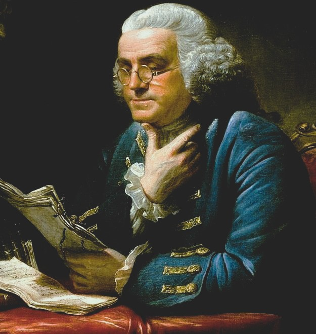
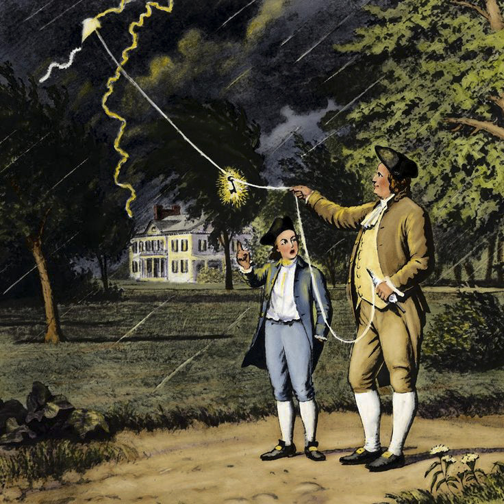

Who Was Benjamin Franklin?
Benjamin Franklin (January 17, 1706 – April 17, 1790) was an American printer, scientist, diplomat, author, and Founding Father of the United States, best known for his practical philosophy of virtue and self-improvement, his scientific work on electricity, and his central role in drafting both the Declaration of Independence and the United States Constitution.
Franklin is especially associated with a distinctly practical and civic-minded approach to philosophy, treating moral improvement as a habit to be built through daily, tracked practice rather than abstract theoretical debate, an approach he summarized in his personal system of thirteen virtues and popularized for a broad readership through his widely circulated Poor Richard's Almanack.
Born in Boston in 1706 and largely self-educated after leaving school at age ten, Franklin rose from a printer's apprentice to become one of the most respected scientists, writers, and statesmen of the eighteenth century, combining Enlightenment rationalism with a uniquely American emphasis on practical usefulness, civic institution-building, and continuous personal improvement.
Franklin's importance rests on three distinct legacies: his practical moral philosophy of virtue and self-improvement, still influential in modern personal-development writing; his Enlightenment scientific contributions, including the lightning rod; and his foundational political role in securing American independence and shaping its constitutional government.
Benjamin Franklin: Quick Facts
- Name — Benjamin Franklin
- Born — January 17, 1706, Boston, Massachusetts Bay
- Died — April 17, 1790, Philadelphia, Pennsylvania
- Associated with — Enlightenment philosophy, civic virtue, and American pragmatism
- Known for — The 13 virtues, Poor Richard's Almanack, and the lightning rod
- Major works — Poor Richard's Almanack and The Autobiography of Benjamin Franklin
- Political role — Signer of the Declaration of Independence and the U.S. Constitution
- Scientific legacy — Pioneering research on electricity and invention of the lightning rod
- Religious view — Deism, belief in a rational, non-denominational creator
- Was he president? — No; he never served as U.S. President
Benjamin Franklin Timeline: Key Dates and Events
Benjamin Franklin's life spans eighty-four years of American colonial and revolutionary history, and the following timeline lists the most historically documented dates and events of his career, drawn from his own Autobiography, surviving correspondence, and official government records.
- 1706 — Born in Boston, Massachusetts Bay, on January 17.
- 1718 — Apprenticed as a printer to his older brother James in Boston.
- 1723 — Left Boston for Philadelphia to begin his independent printing career.
- 1727 — Founded the Junto, a discussion club for civic and intellectual improvement.
- 1731 — Founded the Library Company of Philadelphia, one of America's first lending libraries.
- 1732 — Published the first edition of Poor Richard's Almanack.
- 1736 — Founded the Union Fire Company, Philadelphia's first volunteer fire department.
- 1743 — Founded the American Philosophical Society.
- 1751 — Helped found the academy that later became the University of Pennsylvania.
- 1752 — Conducted his famous kite experiment investigating the nature of lightning.
- 1776 — Signed the Declaration of Independence as a delegate from Pennsylvania.
- 1778 — Secured the Treaty of Alliance with France as U.S. Minister to France.
- 1783 — Helped negotiate the Treaty of Paris, ending the American Revolutionary War.
- 1787 — Signed the United States Constitution at the Constitutional Convention.
- 1790 — Died in Philadelphia on April 17, at age 84.
What Time Period Did Benjamin Franklin Live In?

Benjamin Franklin lived from 1706 to 1790, spanning the height of the Age of Enlightenment in Europe and America and the entire arc of the American Revolutionary period, from British colonial rule through independence and the drafting of the United States Constitution.
This era emphasized reason, empirical science, religious tolerance, and the idea that human institutions could be rationally improved through deliberate effort, values Franklin absorbed directly through his own wide reading and correspondence with leading European Enlightenment figures, including Voltaire, whom he personally met in Paris.
Franklin's career unfolded directly alongside the growth of American colonial self-governance, and his own civic and political activity, from founding Philadelphia's first lending library to signing the founding documents of the United States, traces the broader transformation of the American colonies into an independent, constitutionally governed nation.
What Was Benjamin Franklin's Early Life Like?
Benjamin Franklin was born in Boston in 1706, one of seventeen children in a modest candle-maker's family, and he received only about two years of formal schooling before being apprenticed at age twelve to his older brother James, a Boston printer, where he learned the printing trade and began teaching himself through voracious independent reading.
At age seventeen, Franklin left Boston without his brother's permission and settled in Philadelphia, where he established himself as an independent printer, eventually acquiring his own newspaper, the Pennsylvania Gazette, and building the financial independence and public reputation that would support his later scientific and political career.
This largely self-directed early education, built through disciplined reading, writing practice, and continuous self-critique rather than formal schooling, directly shaped Franklin's later philosophy of self-improvement, since he treated his own intellectual and moral development as something to be actively and deliberately constructed rather than passively received.
Was Benjamin Franklin a Founding Father?
Yes, Benjamin Franklin is one of the most significant Founding Fathers of the United States, one of only six people who signed both the Declaration of Independence in 1776 and the United States Constitution in 1787, and the only individual to sign both of those documents as well as the Treaty of Alliance with France and the Treaty of Paris.
Franklin served on the committee that drafted the Declaration of Independence, contributed to its editing alongside Thomas Jefferson and John Adams, and later played an essential diplomatic role in securing French military and financial support for the American Revolution, support that proved decisive to the eventual American victory.
At the 1787 Constitutional Convention, Franklin, then in his eighties and the oldest delegate present, worked to broker compromise between competing factions and delivered a famous closing speech urging unanimous support for the finished Constitution despite its imperfections, a speech widely cited as a model of pragmatic political conciliation.
What Did Benjamin Franklin Believe?
Benjamin Franklin believed that moral virtue and personal improvement are best achieved through deliberate, repeated practice rather than through abstract philosophical theorizing, a conviction he applied systematically to his own life through his personal project of tracking thirteen specific virtues in a daily chart.
Franklin held a deist religious view, believing in a rational creator who established the natural laws governing the universe but who did not necessarily intervene directly in daily human affairs, a position that let him affirm broad religious and moral values shared across different denominations without committing to the specific doctrines of any single church.
Franklin also held a strongly civic and practical philosophy of usefulness, arguing that knowledge, invention, and personal virtue all found their highest purpose in benefiting the broader public community, a conviction reflected directly in his founding of libraries, fire departments, hospitals, and educational institutions throughout his life.
Scholars generally treat Franklin less as a systematic philosopher developing original metaphysical theory than as a practical Enlightenment moralist and civic thinker, but his specific approach to virtue, self-improvement, and public usefulness is consistently recognized as a distinctively influential and lastingly American contribution to practical ethics.
What Are Benjamin Franklin's 13 Virtues?
Benjamin Franklin's 13 virtues, described in his Autobiography, are Temperance, Silence, Order, Resolution, Frugality, Industry, Sincerity, Justice, Moderation, Cleanliness, Tranquility, Chastity, and Humility, a personal list he compiled around 1726 as a practical program for systematic moral self-improvement.
Franklin tracked his daily adherence to each virtue in a small printed chart, focusing on one virtue per week in rotation and marking a dot for every daily failure, treating moral improvement as a measurable habit built gradually over time rather than a single decisive act of will or religious conversion.
Franklin himself candidly admitted in his Autobiography that he never achieved full and perfect mastery of every virtue, particularly Order, but he maintained that the disciplined attempt itself produced substantial genuine improvement in his character, a pragmatic conclusion that has made this specific system a lasting reference point in modern self-improvement writing.
What Is Poor Richard's Almanack?
Poor Richard's Almanack is an annual publication Franklin wrote and published under the pen name "Richard Saunders" from 1732 to 1758, combining practical almanac information, including weather predictions and astronomical data, with memorable proverbs and moral aphorisms promoting thrift, hard work, and common-sense wisdom.
The almanac became one of the most widely read publications in colonial America, second in circulation only to the Bible in many colonial households, and its short, quotable sayings, including "early to bed and early to rise, makes a man healthy, wealthy, and wise," spread Franklin's practical moral philosophy to a broad popular audience well beyond educated elites.
Poor Richard's Almanack remains historically significant as an early and highly successful example of using accessible, memorable popular writing to communicate practical ethical guidance, a communicative strategy that closely parallels Franklin's broader lifelong commitment to making useful knowledge available to ordinary people.
What Is The Autobiography of Benjamin Franklin About?
The Autobiography of Benjamin Franklin, left unfinished at his death and covering his life only up through 1757, recounts Franklin's rise from a printer's apprentice to a respected public figure, presenting his personal virtue project, his civic initiatives, and his practical philosophy of self-improvement in his own candid and often self-deprecating voice.
Originally written as private advice for his son, the Autobiography evolved into one of the most widely read American works of personal narrative, valued for its engaging, plainspoken prose style and its detailed, practical account of how deliberate habit and disciplined effort could transform a person's character and social standing.
The Autobiography remains a foundational text in the American genre of self-improvement literature, continuing to be studied both as a primary historical source for Franklin's own life and as an early model for the personal-development writing that remains popular in American publishing today.
Was Benjamin Franklin Religious? What Is Franklin's Deism?
Benjamin Franklin held a religious position generally described as deism, believing in a single rational creator who established the natural laws governing the universe, while expressing skepticism toward specific denominational doctrines and organized religious ritual throughout most of his adult life.
Franklin nonetheless maintained that shared moral values, including honesty, charity, and civic responsibility, held genuine importance regardless of specific theological doctrine, and he financially supported multiple different Philadelphia churches and religious congregations as expressions of this broader, non-sectarian moral commitment.
Late in life, at the 1787 Constitutional Convention, Franklin famously proposed opening the contentious proceedings with daily prayer, reflecting his continued belief that divine providence played some meaningful role in human affairs, even as his overall religious outlook remained closer to rational deism than to any specific orthodox Christian denomination.
What Did Benjamin Franklin Invent?

Benjamin Franklin invented the lightning rod, a metal rod mounted on buildings to safely conduct lightning strikes into the ground, along with several other practical devices, including bifocal eyeglasses, the efficient Franklin stove for home heating, a flexible urinary catheter, and the glass armonica musical instrument.
Franklin deliberately declined to patent any of his inventions, explaining in his Autobiography that since he had benefited freely from the inventions of others, he should likewise make his own innovations freely available for the public good rather than seeking personal financial profit from them.
This consistent pattern of declining to profit personally from useful invention illustrates Franklin's broader civic philosophy that knowledge and innovation achieve their fullest value when shared openly for common public benefit rather than restricted for individual commercial gain.
What Was Benjamin Franklin's Kite Experiment?
Benjamin Franklin's kite experiment, conducted in June 1752, tested his hypothesis that lightning is a form of electricity by flying a kite with a metal key attached during a thunderstorm, observing electrical sparks jump from the key, evidence he interpreted as confirming that atmospheric lightning and laboratory-generated electricity are the same fundamental phenomenon.
This experiment built directly on Franklin's earlier theoretical work on electricity, published in his influential letters to the Royal Society in London, which had already established his international scientific reputation before the kite experiment provided dramatic public confirmation of his theoretical predictions.
The kite experiment directly led to Franklin's practical invention of the lightning rod, and it remains one of the most famous individual experiments in the history of American science, though contrary to a popular myth, Franklin was not struck by lightning during the experiment and survived it without injury.
What Was Benjamin Franklin's View on Slavery?
Benjamin Franklin owned enslaved people for a significant portion of his life and, for many years, printed advertisements for slave sales in his newspaper, but he underwent a documented change of view later in life, ultimately becoming a prominent public opponent of slavery.
In 1787, Franklin became president of the Pennsylvania Society for Promoting the Abolition of Slavery, and in February 1790, shortly before his death, he signed and submitted a formal petition to the newly established U.S. Congress urging the abolition of slavery and the slave trade, one of his final significant public acts.
Historians generally treat this documented evolution, from slaveholder to outspoken abolitionist advocate, as illustrating both the genuine moral limitations of Franklin's earlier life and the capacity for significant, well-documented change in his considered moral views over the course of a long public career.
Was Benjamin Franklin a Scientist?
Yes, Benjamin Franklin was a serious and internationally recognized scientist, whose experimental research on electricity, published as Experiments and Observations on Electricity in 1751, earned him honorary degrees from Harvard, Yale, and the University of St Andrews, along with the Royal Society's prestigious Copley Medal in 1753.
Franklin's scientific method exemplified core Enlightenment empirical values, relying on careful observation, controlled experiment, and testable hypothesis rather than inherited authority or purely theoretical speculation, an approach reflected clearly in his systematic study of electrical phenomena and his introduction of key electrical terminology, including "positive" and "negative" charge, still used today.
Beyond electricity, Franklin also conducted significant research on ocean currents, mapping the Gulf Stream, and made practical contributions to demography, meteorology, and naval engineering, reflecting the broad, generalist scientific curiosity characteristic of Enlightenment natural philosophy.
What Was Benjamin Franklin's Role in the Declaration of Independence?
Benjamin Franklin served on the five-member committee appointed by the Continental Congress in 1776 to draft the Declaration of Independence, working alongside Thomas Jefferson, John Adams, Roger Sherman, and Robert Livingston, and he personally reviewed and edited Jefferson's original draft before its submission to Congress.
Franklin is credited with several specific editorial suggestions to Jefferson's draft, and he famously offered Jefferson calm reassurance and characteristic wit when Congress made further editorial changes to the document, reportedly comforting the frustrated Jefferson with an anecdote about the value of not taking public editing too personally.
Franklin signed the finished Declaration of Independence on August 2, 1776, reportedly remarking to fellow signers that they must all "hang together" or they would "assuredly all hang separately," a comment reflecting the genuine treasonous risk each signer accepted under British law by publicly supporting American independence.
What Was Benjamin Franklin's Role in the U.S. Constitution?
Benjamin Franklin served as a Pennsylvania delegate to the 1787 Constitutional Convention in Philadelphia, where, at eighty-one years old, he was the oldest delegate present, contributing his considerable political experience toward brokering compromise among delegates representing sharply divided state interests.
Franklin delivered a widely cited closing speech to the Convention, acknowledging that the finished Constitution contained imperfections he personally disagreed with, but urging every delegate to set aside individual objections and support the document unanimously for the sake of national unity, a speech historians frequently cite as a model of pragmatic political conciliation.
Franklin signed the completed United States Constitution on September 17, 1787, making him, alongside Roger Sherman, one of only two people to sign the Declaration of Independence, the Treaty of Alliance with France, the Treaty of Paris, and the Constitution.
What Was Benjamin Franklin's Diplomatic Career in France?
Benjamin Franklin served as the United States' first Minister to France from 1776 to 1785, successfully securing French military alliance, financial loans, and material support that proved decisive to the American Revolutionary War effort against Britain.
Franklin's considerable personal popularity in France, cultivated partly through his existing international scientific reputation and his carefully cultivated public image of unpretentious American simplicity, helped him negotiate the 1778 Treaty of Alliance with France, a diplomatic achievement widely regarded as essential to the eventual American military victory.
Franklin also served as one of the three American negotiators, alongside John Jay and John Adams, who negotiated the 1783 Treaty of Paris, which formally ended the Revolutionary War and secured official British recognition of American independence.
What Civic Institutions Did Benjamin Franklin Found?
Benjamin Franklin founded numerous lasting civic institutions in Philadelphia, including the Library Company of Philadelphia in 1731, one of America's first subscription lending libraries, and the Union Fire Company in 1736, Philadelphia's first organized volunteer fire department.
Franklin also founded the American Philosophical Society in 1743, an institution promoting scientific and scholarly exchange that continues to operate today, and he helped establish the academy that would later become the University of Pennsylvania, reflecting his consistent belief that education should serve broad practical civic purposes.
This extensive record of civic institution-building illustrates Franklin's broader philosophy that individual talent and effort achieve their fullest value when directed toward creating durable public institutions capable of benefiting the wider community well beyond any single individual's own lifetime.
What Is Benjamin Franklin's Philosophy of Self-Improvement?
Benjamin Franklin's philosophy of self-improvement holds that personal character can be deliberately and systematically developed through tracked daily habit, structured reflection, and repeated practice, rather than through sudden moral conversion, inherited disposition, or abstract philosophical insight alone.
This approach is reflected concretely in Franklin's 13 virtues chart, his daily personal schedule outlined in the Autobiography, and his broader habit of continuous self-examination, treating personal development as an ongoing practical project comparable to a scientific experiment conducted on one's own character and behavior.
Franklin's specific method, emphasizing measurable habit tracking and incremental improvement over dramatic transformation, established an influential and distinctly practical template later widely adopted within the modern genre of American self-improvement and personal-productivity literature.
How Does Franklin's Pragmatism Compare with Later American Pragmatism?
Franklin's practical philosophy anticipates key themes later developed within formal American pragmatism, the philosophical movement associated with Charles Sanders Peirce, William James, and John Dewey, which similarly evaluated ideas and beliefs primarily by their practical consequences and usefulness rather than by abstract theoretical criteria alone.
Where later pragmatist philosophers developed rigorous formal theories of truth and meaning grounded in practical consequence, Franklin's own earlier practical philosophy operated at a more directly applied, everyday level, emphasizing useful habit, civic benefit, and measurable self-improvement rather than systematic epistemological theory.
Historians of American thought frequently cite Franklin as an important early forerunner of this distinctly American emphasis on practical usefulness as a philosophical value, even though Franklin himself predates the formal pragmatist movement by more than a century.
How Does Benjamin Franklin Compare with John Locke?
Benjamin Franklin's political philosophy draws significantly on the earlier work of John Locke, whose theories of natural rights, government by consent, and religious toleration provided key philosophical foundations that Franklin and other American founders drew on directly in justifying independence from Britain.
Where Locke developed a systematic theoretical treatment of natural rights and the social contract within formal philosophical treatises, Franklin's own contribution operated more practically, applying broadly Lockean principles directly to the concrete political documents and diplomatic negotiations that established the actual United States government.
This relationship illustrates a broader pattern within American founding-era thought, in which European Enlightenment political theory, including Locke's, was directly translated into practical governing documents and institutions by American statesmen including Franklin, Jefferson, and Madison.
Did Benjamin Franklin Know Voltaire?
Yes, Benjamin Franklin personally met the French Enlightenment philosopher Voltaire in Paris in 1778, during Franklin's diplomatic service in France, and the two aging intellectual figures famously embraced publicly before an admiring French audience at the French Academy of Sciences.
Franklin and Voltaire shared significant Enlightenment common ground, including commitment to religious toleration, skepticism toward inherited aristocratic and religious authority, and confidence in reason and science as tools for genuine human progress, even though Voltaire's philosophical writing engaged in considerably more explicit and systematic critique of organized religion than Franklin's own more reserved deism.
This documented meeting between two of the era's most celebrated intellectual figures symbolized the close transatlantic connection between French and American Enlightenment thought during the period of the American Revolution, when French intellectual and diplomatic support proved essential to American independence.
When Did Benjamin Franklin Die?
Benjamin Franklin died on April 17, 1790, in Philadelphia, at age eighty-four, following a prolonged illness, and his funeral drew an estimated twenty thousand mourners, one of the largest public gatherings in America up to that time, reflecting his exceptional public stature at the time of his death.
News of Franklin's death prompted the French National Assembly to declare three days of official mourning, a notable recognition of his significant diplomatic contribution to French support for American independence and his considerable international scientific reputation.
Franklin's death came one year after George Washington took office as the first President of the United States under the Constitution Franklin had helped draft and sign, meaning Franklin lived just long enough to see the constitutional government he had helped establish successfully begin operation.
What Are Common Misconceptions About Benjamin Franklin?
One common misconception assumes Franklin served as President of the United States, when he in fact never held that office; the confusion likely arises from his separate service as President of Pennsylvania's Supreme Executive Council, a state-level executive position quite different from the national presidency.
Another persistent misconception claims Franklin was struck by lightning during his famous 1752 kite experiment, when historical accounts indicate he was not directly struck and instead observed electrical sparks from the key attached to his kite string, a much less dramatic but scientifically significant result.
A further misconception treats Franklin's practical virtue project as a form of rigid, joyless moralism, overlooking his own candid acknowledgment in the Autobiography of his repeated failures, particularly regarding Order, and his characteristic wit and self-deprecating humor throughout his discussion of the entire self-improvement project.
What Is Benjamin Franklin's Legacy Today?
Benjamin Franklin's legacy rests on three enduring contributions: his practical philosophy of virtue and habit- based self-improvement, which continues to directly influence modern personal-development writing; his Enlightenment scientific research on electricity, which established foundational electrical terminology still in use; and his foundational political role in securing American independence and shaping constitutional government.
Franklin's image continues to appear on the United States hundred-dollar bill, and institutions he founded, including the University of Pennsylvania and the American Philosophical Society, continue to operate today, providing a direct, continuing institutional link between Franklin's own era and contemporary American civic and academic life.
Today, Franklin is widely studied not only as a historical Founding Father but as an early and distinctly practical American philosophical voice, whose emphasis on useful knowledge, civic virtue, and habit-based self-improvement continues to shape popular understanding of practical ethics and personal development.
Benjamin Franklin: Main Philosophical Ideas
Benjamin Franklin's central ideas are best summarized under five key themes drawn from his Autobiography, his civic career, and his scientific and political writing.
Habit-Based Virtue
Moral character can be systematically improved through daily tracked practice of specific virtues rather than sudden moral conversion.
Deism
A rational creator established the laws of nature, while shared moral values matter more than specific denominational doctrine.
Useful Knowledge
Science and invention achieve their fullest value when shared openly for public benefit rather than restricted for private profit.
Civic Institution-Building
Individual talent should be directed toward creating durable public institutions that outlast any single person's own lifetime.
Pragmatic Political Compromise
Lasting political unity sometimes requires setting aside individual objections in support of an imperfect but workable shared agreement.
What Do We Actually Know About Benjamin Franklin's Life?
Benjamin Franklin's biography is exceptionally well documented through his own extensive surviving correspondence, his partial Autobiography, official government and diplomatic records, and contemporary accounts from figures including Thomas Jefferson and John Adams, making him one of the most thoroughly documented figures of the American founding era.
Relatively Well-Attested
- Franklin was born in Boston in 1706 and died in Philadelphia in 1790.
- He signed the Declaration of Independence, the Treaty of Alliance with France, the Treaty of Paris, and the Constitution.
- He conducted his kite experiment on electricity in June 1752.
- He served as U.S. Minister to France from 1776 to 1785.
- He became president of the Pennsylvania Society for Promoting the Abolition of Slavery in 1787.
Areas of Ongoing Scholarly Debate
- The precise extent of Franklin's specific editorial contributions to Jefferson's Declaration draft.
- How fully and sincerely Franklin's later abolitionist views reflect complete moral transformation versus strategic public positioning.
- How representative Franklin's specific practical philosophy is of broader American Enlightenment thought as a whole.
Why Is Benjamin Franklin Important?
Benjamin Franklin is important because he combined practical moral philosophy, Enlightenment science, and foundational statecraft into a single, distinctly American public career, helping secure United States independence while establishing an enduringly influential model of habit-based virtue and civic usefulness.
His philosophical legacy raises a fundamental question that remains central to ethics and practical philosophy: Can genuine moral character be systematically built through tracked daily habit and deliberate practice, or does lasting virtue require something more than measurable, incremental self-discipline?
Franklin's importance therefore does not depend on treating him as a systematic academic philosopher in the manner of Aristotle or Kant. His significance comes from his role as a practical Enlightenment moralist and founding statesman whose specific methods continue to shape American civic life and popular philosophy today.
Benjamin Franklin Explained Simply
Benjamin Franklin was an American Founding Father, printer, and scientist who believed moral character could be built through tracked daily habit, listing 13 virtues he practiced systematically and sharing practical wisdom through Poor Richard's Almanack.
Instead of treating philosophy as abstract theory, Franklin applied Enlightenment reason directly to everyday civic life, inventing the lightning rod, founding libraries and fire departments, and helping draft the Declaration of Independence and the United States Constitution.
- Thinker: Benjamin Franklin
- Period: 1706–1790
- Tradition: American Enlightenment and practical ethics
- Major works: Poor Richard's Almanack and The Autobiography of Benjamin Franklin
- Central concern: Building virtue and public usefulness through practical habit
- Key contribution: The 13 virtues and the lightning rod
A Principle Central to Franklin's Philosophy
“An investment in knowledge pays the best interest.”
Frequently Asked Questions About Benjamin Franklin
Who was Benjamin Franklin?
Benjamin Franklin was an American Founding Father, printer, scientist, diplomat, and Enlightenment thinker known for his 13 virtues, Poor Richard's Almanack, the lightning rod, and his central role in drafting the Declaration of Independence and the United States Constitution.
Was Benjamin Franklin ever President of the United States?
No, Benjamin Franklin never served as President of the United States. He died in 1790, one year after George Washington took office as the first president, though Franklin served as President of Pennsylvania's Supreme Executive Council, a state-level role often confused with the national presidency.
What are Benjamin Franklin's 13 virtues?
Benjamin Franklin's 13 virtues, listed in his Autobiography, are Temperance, Silence, Order, Resolution, Frugality, Industry, Sincerity, Justice, Moderation, Cleanliness, Tranquility, Chastity, and Humility, which he tracked daily in a personal chart to build moral habit through repeated practice.
What did Benjamin Franklin invent?
Benjamin Franklin invented the lightning rod, bifocal eyeglasses, the Franklin stove, a flexible urinary catheter, and the glass armonica, and he deliberately never patented any of these inventions.
Was Benjamin Franklin struck by lightning during his kite experiment?
No, Franklin was not struck by lightning during his 1752 kite experiment; he observed electrical sparks jump from a key attached to his kite string, confirming that lightning is a form of electricity.
What religion did Benjamin Franklin practice?
Benjamin Franklin was a deist, believing in a rational creator who established the laws of nature, while valuing shared moral conduct over specific denominational doctrine.
Did Benjamin Franklin own slaves?
Yes, Franklin owned enslaved people earlier in his life, but he later became president of the Pennsylvania Society for Promoting the Abolition of Slavery and petitioned Congress to abolish slavery shortly before his death.
What is Poor Richard's Almanack?
Poor Richard's Almanack is an annual publication Franklin wrote from 1732 to 1758 under the pen name Richard Saunders, combining practical almanac information with proverbs promoting thrift, hard work, and common-sense wisdom.
Did Benjamin Franklin sign the Declaration of Independence and the Constitution?
Yes, Franklin is one of only six people who signed both the Declaration of Independence in 1776 and the United States Constitution in 1787.
Why is Benjamin Franklin important today?
Benjamin Franklin remains important because his practical philosophy of virtue and habit continues to influence modern self-improvement writing, and his scientific and political achievements laid foundational groundwork for American science and government.
Related Thinkers
Benjamin Franklin belongs to the wider tradition of Enlightenment and civic philosophy. Explore thinkers who shaped and responded to many of the same questions about reason, virtue, and government.
Philosophy Branches Connected to Benjamin Franklin
Franklin's philosophical legacy is particularly important for ethics, where his habit-based virtue system remains widely discussed, and for political philosophy, which continues to draw on his foundational civic and constitutional work.
Why Benjamin Franklin Still Matters
Benjamin Franklin did not simply theorize about virtue and civic life from a distance; he tested his own ideas directly against his personal habits, his scientific experiments, and the practical demands of building a new nation, producing a uniquely applied and lastingly influential American philosophy.
Yet the questions associated with Franklin remain fundamental to practical philosophy: Can virtue be built through tracked daily habit? What do individuals owe to the civic institutions that sustain their community? Can genuine political unity survive real, unresolved disagreement?
The practical philosophy of virtue, usefulness, and civic responsibility he developed across a printing shop, a laboratory, and the founding chambers of a new nation transformed these questions into some of the most enduringly practical contributions to American thought. His emphasis on habit, reason, and public usefulness made Benjamin Franklin one of the most significant and widely admired figures in American history.
Explore Great Philosophers